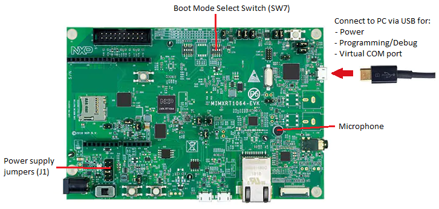
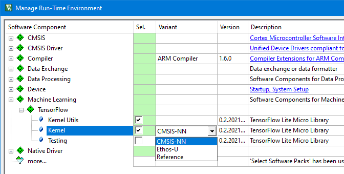

|
Orta
Version 0.2
Examples Projects and GitHub Repositories
|
|
Orta
Version 0.2
Examples Projects and GitHub Repositories
|
An implementation of the micro speech example with VHT support is available at github.com/MDK-Packs/VHT-TFLmicrospeech.
The program analyzes an audio input with a voice recognition model that can detect 2 keywords - yes and no. The recognized keywords are then printed into a serial interface. The voice recognition model is implemented using TensorFlow Lite for Microcontrollers.
The example project can be executed on \prj_name as well as on hardware. This demonstrates how to use the processor and peripheral abstraction layers for simpler software portability across different targets.
The table below explains the content in the micro speech example's repository.
| Folder | Description |
|---|---|
./micro_speech/ | Contains the voice recognition model that is used by all targets. This part is similar to the original TF-Lite for Microcontrollers example, with just minor modifications. TensorFlow calculation kernel is provided separately via corresponding software packs listed in Prerequisites and as explained in TensorFlow-Lite kernel variants. |
./Platform_FVP_Corstone_SSE-300_Ethos-U55/ | Project files specific for executing the program on VHT. See Running on \prj_name for details and execution instructions. |
./Platform_MIMXRT1064-EVK/ | Project files specific for executing the program on MIMXRT1064-EVK. See Running on a hardware target for details and execution instructions. |
./VSI | Implementation of Audio Streaming Interface via VSI. See Simulation chapter for details. |
Following items are required for running the micro speech example on a PC:
FVP_VSI_Corstone_SSE-300_Ethos-U55_xxx.zip shall be extracted into directory ./VHT/Build_Corstone_SSE-300_Ethos-U55/system../VHT/README.md.The example project can be executed on \prj_name as well as on hardware as explained in this section.
Directory ./VHT-TFLmicrospeech/Platform_FVP_Corstone_SSE-300_Ethos-U55/ in the example repository contains the project files for executing the program on VHT.
The project can be executed on two types of targets:
Below is the description of available project targets with execution instructions:
Example target runs on a VHT with VSI support:
./VHT-TFLmicrospeech/VSI/audio/python/arm_vsi0.py from the WAVE file ./VHT-TFLmicrospeech/Platform_FVP_Corstone_SSE-300_Ethos-U55/test.wav which contains keywords 'Yes' and 'No' alternating three times../VHT-TFLmicrospeech/Platform_FVP_Corstone_SSE-300_Ethos-U55/microspeech.uvprojx and build it for target Example.microspeech.Example.cprj project.run_example.cmd. Heard yes (152) @1100ms
Heard no (141) @5500ms
Heard yes (147) @9100ms
Heard no (148) @13600ms
Heard yes (147) @17100ms
Heard no (148) @21600ms
Example Test is an internal test for the Example target
Audio Provider Mock runs on a VHT without VSI support:
c:\Program Files\ARM\FVP_Corstone_SSE-300_Ethos-U55\models\Win64_VC2017\FVP_Corstone_SSE-300_Ethos-U55.exe. Update it in the uVision project or in the execution script if necessary.microspeech.uvprojx target Audio Provider Mock or with CMSIS-Build using microspeech.Audio_Provider_Mock.cprj project.run_audio_provider_mock.cmd. Heard silence (149) @400ms
Heard yes (158) @1200ms
Heard no (143) @5600ms
Heard yes (149) @9100ms
Heard no (142) @13600ms
Heard yes (149) @17100ms
Heard no (142) @21600ms
... Audio Provider Mock Test: internal test for Audio Provider Mock target
Directory ./VHT-TFLmicrospeech/Platform_MIMXRT1064-EVK/ in the example repository contains the project files for executing the program on NXP MIMXRT1064-EVK development board with an Arm Cortex-M7 processor. One target MIMXRT1064-EVK is provided in the project.
This project uses the on-board microphone for audio input and prints recognized keywords to the serial interface.
The hardware setup is simple and requires only connection to the PC via USB. The project is configured to load the program to QSPI NOR flash so the boot switch SW7 shall be set to 0010.

Execute the program in following steps:
microspeech.uvprojx or with CMSIS-Build using microspeech.MIMXRT1064-EVK.cprj project.The micro speech example uses tensorflow-lite-micro pack that contains Machine Learning software component implementing among others the universal kernel for executing TensorFlow ML operations independent from the actual load type (audio, video, or others).
Implementation of these kernel operations is available in several variants optimized for Arm targets. When using the uVision project the variant can be selected in Manage Run-Time Environment window as shown on the picture below.

When using CMSIS-Build the kernel variant is specified in the .cprj project file in the line:
Following kernel variants are available:

File ./micro_speech/src/main_functions.cc in the repository example contains Event Statistics annotations that allow to measure performance of ML algorithms in different configurations. This currently works only in setup with Keil MDK. This video demonstrates program execution including the views into Event Statistics.
There are three events defined:
Execute the program with different TensorFlow-Lite kernel variants and compare the Event Statistics output. Implementations optimized for Arm hardware extensions provide significant performance improvement C1 measurement and also shorten C0 duration.